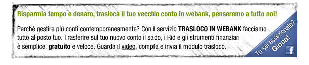

<table border="0" cellspacing="0" cellpadding="0" width="620" style="background-color:#fff">
	<tr>
		<td>
			<map name="facebook" id="facebook">
			<area shape="rect" coords="396,86,278,155" href="#" target="_blank" alt="modulo trasloco">
			<area shape="rect" coords="35,86,110,105" href="#" target="_blank" alt="guarda il video"> 			
			<area shape="poly" coords="489,116,596,22,596,116" href="#" target="_blank" alt="Tu sei eccezionale, gioca!" style="font-family:thaoma, arial, sans-serif;color:#6f8f0a; font-size:11px; line-height:25px; font-weight:bold;"> 
		</td>
	</tr>
</table>